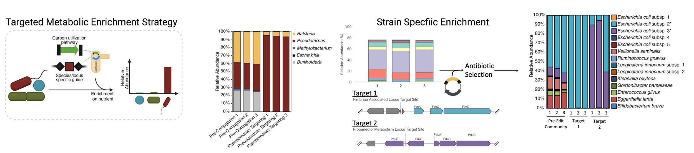
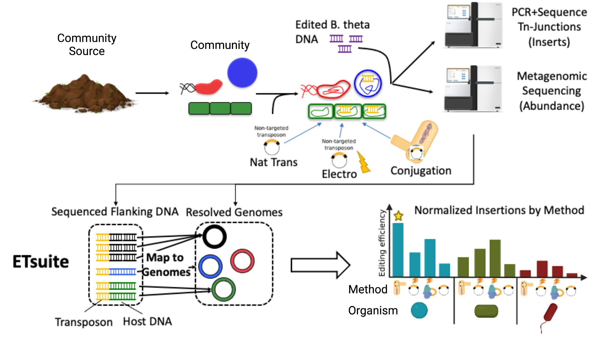
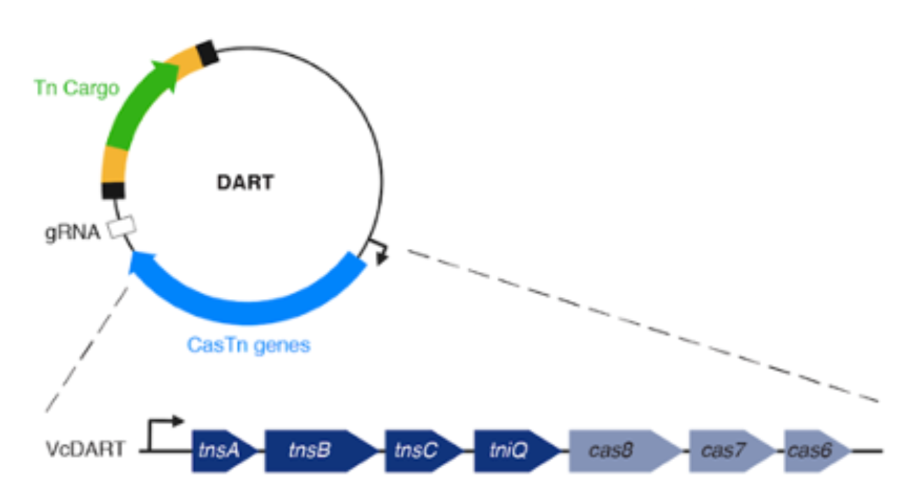

Community Editing
Overview
Microbes, microscopic single celled organisms, are essential for the survival of humans, animals, plants, and Earth’s ecosystems. However, no individual microorganism acts in isolation to perform these tasks. Instead, microbes interact in communities, and their real-world impact is realized only through their collective behavior. Thus, to truly understand how microbes work we must develop the specialized tools needed to study them within community contexts.
The ability to edit the DNA of isolated microorganisms has been foundational to increasing our understanding of how they work. As an example, if a microbe eats sucrose and you want to know what genes are responsible for this behavior, one could edit the DNA of that microbe to disrupt different genes until you break one and the microbe can no longer eat sucrose. In this way scientists have used DNA editing to learn about how genes function and control microbial behavior. However, until now, this type of DNA editing approach has required isolated microorganisms that can grow in the lab. This is problematic from a community context for three critical reasons:
- Most microbes (~99%) have not been isolated in laboratory settings, the isolation of microbes from many novel bacterial phyla has proven extremely difficult, and it is known that growth in community contexts can enable the cultivation of at least some of these microbes in lab-based communities.
- The behavior of an individual microorganism in a community context is different than in isolation due to interactions between the constituent species.
- The collective behavior of microbial communities is a result of a combination of many interactions, and studying these combinations out of a community context is extremely difficult.
Our lab is involved in a large Innovative Genomics Institute collaborative effort to develop tools for in situ targeted genetic modification and interrogation of microbial communities known as BiomeForge. Our primary research foci within this collaboration are the development of in vitro model microbiome systems, modeling and characterization of in vitro model microbiomes, and development of informatic toolsets for targeted community editing approaches.
Approach
The technologies necessary to bring DNA editing to microbial communities has been pioneered at the IGI. The CRISPR-Cas revolution originating in Professor Jennifer Doudna’s lab provides the tools necessary to bring traditional targeted genetic editing to communities. The development of genome-resolved metagenomics (an approach to reconstruct all the individual microbial genomes in a complex community) by Jill Banfield’s lab, provides the understanding required to guide editing and characterize its effects. We have recently merged these complementary skill sets in demonstrating, for the first time, generalizable methods to directly edit DNA in specific microorganisms while in community contexts. This novel approach can be explained at its core as a three-step process:
- Genomic Characterization: First a microbial community is sequenced and the genomes of the organisms present are assembled to understand the community composition and provide the template for editing.
- Assess Delivery Methods: We use a technology known as Environmental Transformation Sequencing (ET-Seq; described below) to assess how well a specific DNA delivery approach can get DNA into microbes of this community.
- Make Targeted Edits: We use a DNA-editing All-in-one RNA-guided CRISPR-Cas Transposase (DART; described below) to then make targeted DNA insertions into a microbe of interest using the best DNA delivery method identified by ET-Seq.
While it is still early days for the development and application of community editing, the technique has nonetheless demonstrated some very exciting results. Using this technology, it was possible to engineer a metabolic function into a community (lactose utilization), without doing any isolation-based engineering, that was previously absent from all the members. This allowed the targeted member to be enriched significantly when lactose was present in the medium (lower left panel). Also, we have found that the targeting of DART is extremely specific, allowing for strain-specific selection and isolation of two different E. coli strains out of a complex infant microbiome enrichment culture, where no member had been previously isolated (lower right panel).
Specific technologies
ET-Seq: Editing organisms in a complex microbiome requires knowledge of which members are accessible to nucleic acid delivery and editing. Environmental Transformation Sequencing (ET-Seq) is a technology developed to assess the ability of individual species within a microbial community to acquire and integrate exogenous DNA without the need to isolate any individual members. In ET-seq, a microbial community is exposed to a randomly integrating mobile genetic element (an un-targeted transposon) and, in the absence of any selection, total community DNA is extracted and sequenced using two protocols. In the first, we enrich and sequence the junctions between the inserted and host DNA to determine insertion location and quantity in each host. In the second protocol, we use low-depth metagenomic sequencing to quantify the abundance of each community member in a sample. Together, the data from these two sequencing procedures are analyzed with an informatic toolset we developed for this purpose, ETSuite, and a relative measure of transformation efficiency for each of the community members is output.
DART: Once it is determined that an organism in a microbial community can acquire and integrate exogenous DNA, a method is necessary to target DNA delivered to the community to that specific organism and only that organism. For this we have developed DNA-editing all-in-one RNA-guided CRISPR–Cas transposase (DART) systems for locus-specific insertion of DNA into organisms within a microbial community. The DART system uses an RNA-guided CRISPR–Cas Tn7 transposase to deliver cargo DNA that is between transposon repeats on a plasmid into a specific location of a target genome defined by the guide RNA (gRNA) also encoded on the same plasmid. These systems also include barcodes that make them compatible with ET-Seq to allow for the detection and tracking of uniquely edited cells. Thus, DART can be used seamlessly with ET-seq for rapid assay of the efficacy of CRISPR–Cas-guided transposition into the genome of a target organism in the absence of selectable markers.
Selected publications
-
Rubin, B. E., Diamond, S., Cress, B. F., Crits-Christoph,
A., Lou, Y. C., Borges, A. L., Shivram, H., He, C., Xu, M.,
Zhou, Z., Smith, S. J., Rovinsky, R., Smock, D. C. J., Tang,
K., Owens, T. K., Krishnappa, N., Sachdeva, R., Barrangou,
R., Deutschbauer, A. M., Banfield, J. F., … Doudna, J. A.
(2022).
Species- and site-specific genome editing in complex bacterial communities. Nature microbiology, 7(1), 34–47.(https://doi.org/10.1038/s41564-021-01014-7)